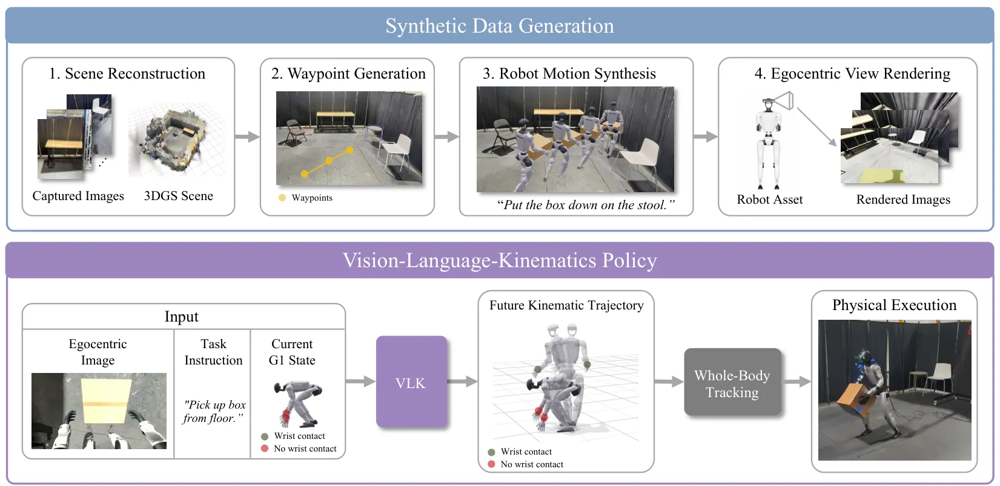
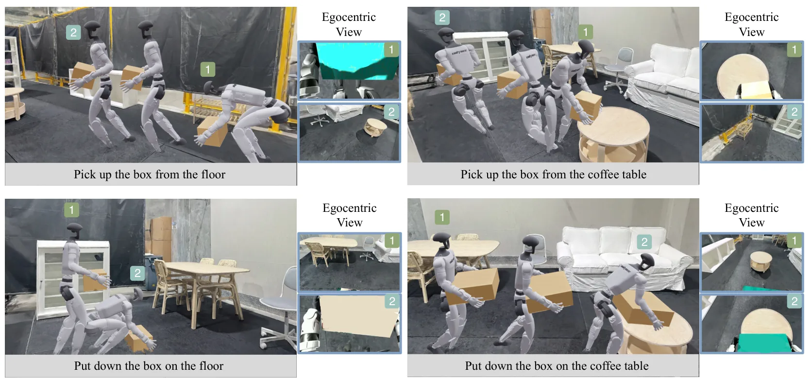
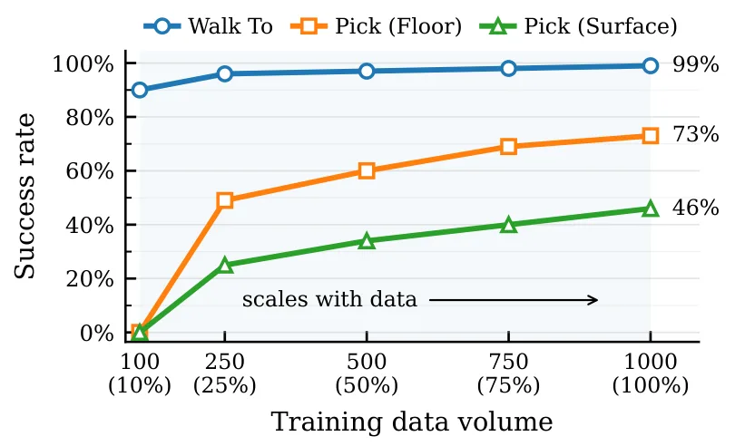
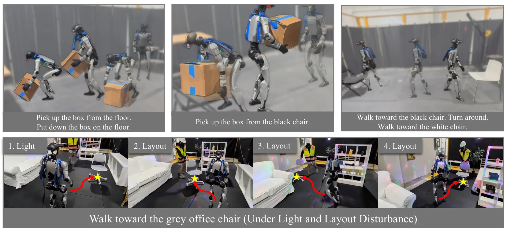
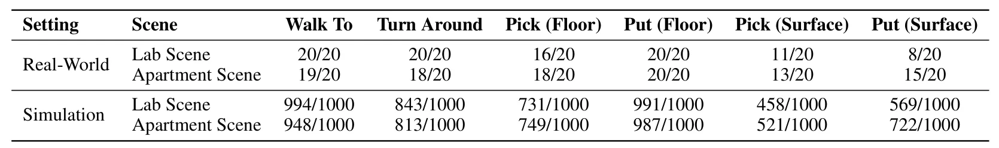
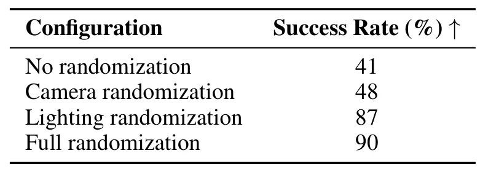

VLK：从重建场景中的合成交互学习人形机器人移动操作VLK: Learning Humanoid Loco-Manipulation from Synthetic Interactions in Reconstructed Scenes
与 3DGS 重建、机器人训练数据生成和 sim-to-real 相关；不是定位论文，但体现重建场景向控制任务闭环的转化。
一句话工作总结
VLK 展示了从 3DGS 重建环境自动合成人形机器人视觉-语言-运动监督的路线，是重建场景服务机器人训练的代表信号。
摘要
感知驱动的人形机器人移动操作需要把第一视角观测和任务指令映射到全身运动，但缺少同时包含 egocentric image、language command 和 robot-compatible kinematic trajectory 的大规模数据。VLK 管线使用 3D Gaussian Splatting 重建 metric-scale 室内环境，再利用 privileged scene information 合成导航与物体交互轨迹，随后渲染配对第一视角观测，自动生成 48,000 条视觉-语言-运动轨迹。作者训练 VLK policy 预测短时程全身 kinematic trajectory，并通过 whole-body tracker 在 Unitree G1 上执行导航和单物体搬运。
Perception-based humanoid loco-manipulation requires connecting egocentric observations and task instructions to whole-body motion. Learning this mapping requires synchronized egocentric images, language commands, and robot-compatible kinematic trajectories, yet no existing data source provides this complete tuple at scale. We address this bottleneck by generating vision-language-kinematics (VLK) supervision synthetically in reconstructed scenes. Our pipeline leverages 3D Gaussian Splatting to reconstruct metric-scale indoor environments, synthesizes navigation and object-interaction trajectories using privileged scene information, and renders paired egocentric observations after the fact. We produce 48,000 paired trajectories with no human intervention and train a VLK policy that predicts short-horizon whole-body kinematic trajectories. A whole-body tracker converts these predictions into actions on the physical humanoid. We evaluate on the physical Unitree G1 performing navigation and single-object transport, demonstrating that synthesized interactions in reconstructed scenes provide effective supervision for sim-to-real perception-based humanoid loco-manipulation. Project Website: https://vision-language-kinematics.github.io/
中文解读摘录
- 为什么看：它把 3DGS 重建场景用于合成 egocentric observations、语言命令和 humanoid-compatible kinematic trajectories，属于“重建场景 → 机器人训练数据”的直接链路。
- 方法要点：在 metric-scale indoor 3DGS 场景中用 privileged scene information 合成导航和物体交互轨迹，再渲染第一视角观测，生成 48,000 条 paired trajectories 训练 VLK policy。
- 结果信号：在 Unitree G1 上验证导航和单物体搬运，说明重建场景中的合成交互可提供可迁移监督。
- 跟踪建议：关注 3DGS 场景的物理可交互性、物体几何/碰撞代理、轨迹合成质量和 sim-to-real 标定误差。
- 链接：abs · PDF · 项目页：https://vision-language-kinematics.github.io/
图表/页面预览

{kind=link}

{kind=link}

{kind=link}

{kind=link}

{kind=link}

{kind=link}
